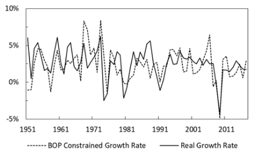

Published Papers
Balance of Payments
Applied Economics, Forthcoming
ABSTRACT
We apply Thirlwall's law (Thirlwall 1979) to estimate long run growth in the UK. In particular, we develop a new test allowing for potential structural breaks based on 2SLS to remedy potential weaknesses that existed in previous methods. Our results show the UK had different balance of payments positions in different time periods, and its growth has been constrained in the past two decades. We further elaborate on pound's changing role as a reserve currency and how this has affected the UK's external constraint and growth.
